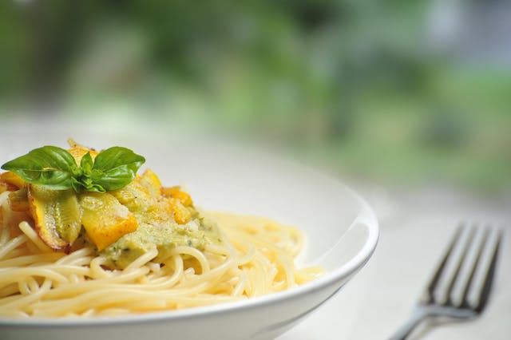

Bienvenue au Quai Antique
Bienvenue sur le site de notre restaurant gastronomique situé au coeur de la magnifique ville de Chambery. Le chef Arnaud Michant vous invite à découvrir un voyage culinaire mémorable.

Le Chef Arnaud Michant vous invite au
Bienvenue sur le site de notre restaurant gastronomique situé au coeur de la magnifique ville de Chambery. Le chef Arnaud Michant vous invite à découvrir un voyage culinaire mémorable.
Découvrez la richesse des saveurs avec nos plats élaborés à partir de produits frais et de saison, cueillis localement.
Vous pouvez directement réserver votre table sur ce site. Il suffit de cliquer sur le bouton ci-dessous.